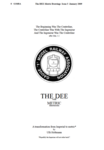
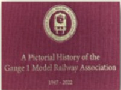
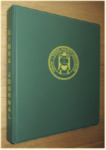

.svg "Select English site")
.svg "Select German site")
.svg "Select French site")
Books
G1MRA has a long tradition of publishing designs, most famously with The Project, a highly detailed text describing the construction of a live steam Gauge 1 locomotive from scratch. First published around 1970 and now in its fifth edition, this book is our best seller. Hundreds of Project locomotives have been constructed, and the boiler and chassis have been used in many other designs.
{kind=link}
We now publish a dozen books covering live steam and electric build guides as well as compilations of articles from our Newsletter and Journal issues. You can read sample extracts from these books by clicking on the cover images below.
Pricing shown is for members; if you are not a member you are still welcome to purchase books, but please add £3.00 per item.
To order books, please fill in this form. Payment may be made by direct bank transfer or by PayPal (with a £2.00 supplement to cover PayPal fees); account details are on the form.
Postage and packing has become a significant cost in recent years which can be avoided by collecting books at G1MRA shows; otherwise please add the following to your total:
1-2 items - UK £3.00; EU £5.00; Rest of the World £7.00
3-4 items - UK £6.00; EU £10.00; Rest of the World £14.00
5+ items - please await an email before making a payment
The Project book - £10.00

Beginners often begin with the original meths-fired ‘Project’ for which some parts are available from G1MRA suppliers. 84 pages including full drawings and instructions to build a live-steam, single cylinder LMS ‘4F’ 0-6-0 tender engine.
The Dee Book - £7.50

Construction guide and drawings to build a live-steam SR ‘D’ class twin inside cylinder tender engine. 96 pages including full drawings and
The Dee Metric Drawings - £5.00
{kind=link}

The Dee book uses UK imperial measurements - this book provides metric eqivalents
ARM1G - the other way round - £7.50

The ARM1G is a live-steam working model that involves very little engineering and is simple to run. 70 pages including full drawings and instructions to build a twin cylinder 0-4-4T.
The Multipurpose Model Steam Turbine a guide to successful scratch building - £10.00

Werner Jeggli, a member of the Swiss Group, has built four Gauge 1 turbine locos. This book tells you how to build yours.
Scratchbuilding the GWR ‘Bulldog’ No. 3343 ‘Camelot’ - £10.00

This book demonstrates how to build from scratch an electric version of the GWR ‘Bulldog. 92 pages with many coloured photographs and lots of detail.
Modelling in Gauge 1 - Book 2 – JVR’s Contribution to Gauge 1 - £7.50

Articles and letters by the legendary John van Riemsdijk from more than 200 Newsletters, over 50 years. Many know of his design input to many Aster locomotives. 100 pages including photos and drawings
Modelling in Gauge 1 – Book 3 – Freight Stock - £7.50

A compilation of articles on freight stock building from NL&Js between 1963 and 2007. 96 pages.
Modelling in Gauge 1 – Book 4 – Coaching Stock - £7.50

A compilation of articles on coaching stock construction from NL&Js between 1963 and 2008. 102 pages.
Modelling in Gauge 1 – Book 5 – Coal Firing - £10.00

Notes on coal-firing and 14 articles based on practical experiences. Many chapters inspired by the GIMRA Swiss Group. 82 pages with colour photos.
A Pictorial History of G1MRA 1947 – 2022 - £35.00

A hardcover, 163 page, celebration of G1MRA’s 75th Anniversary. A glorious selection of photographs from the G1MRA archives, showing garden get-togethers and exhibitions between 1947 and 2022.
Binder for the Newsletter and Journal - £12.00
{kind=link}

A ring binder for up to 12 issues of the NLJ complete with plastic inserts - you do not need to punch holes!